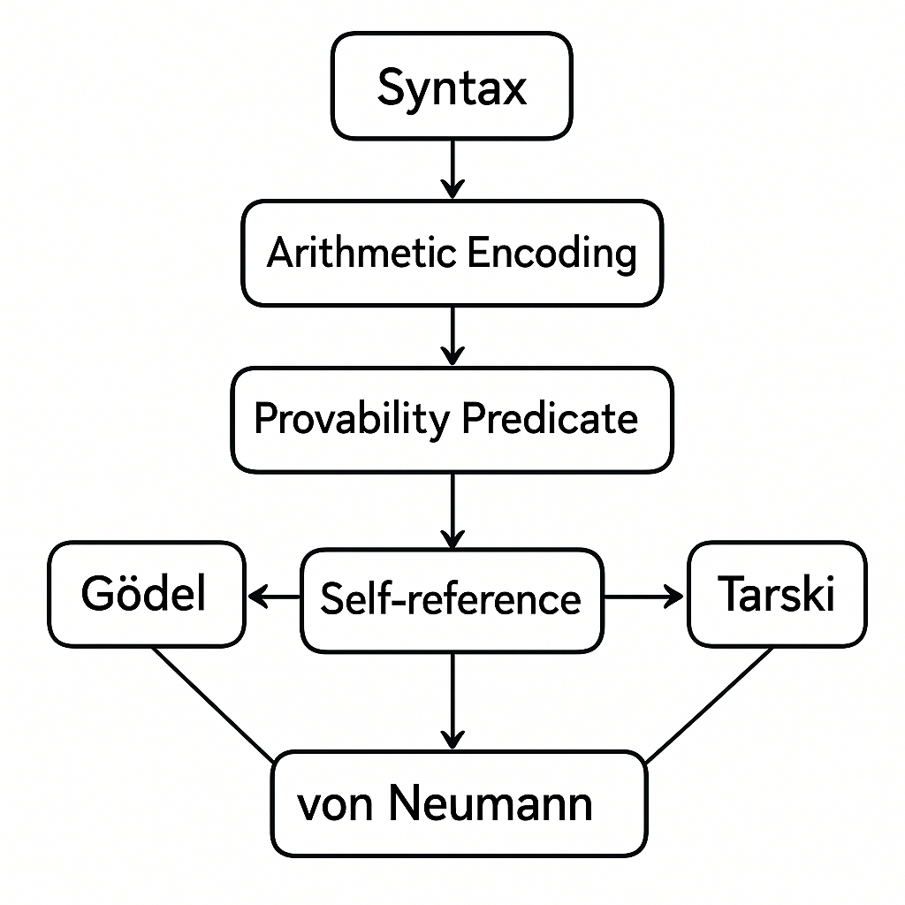
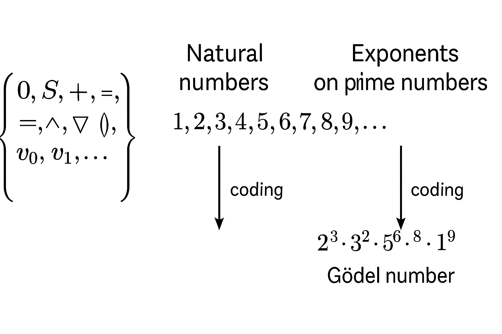
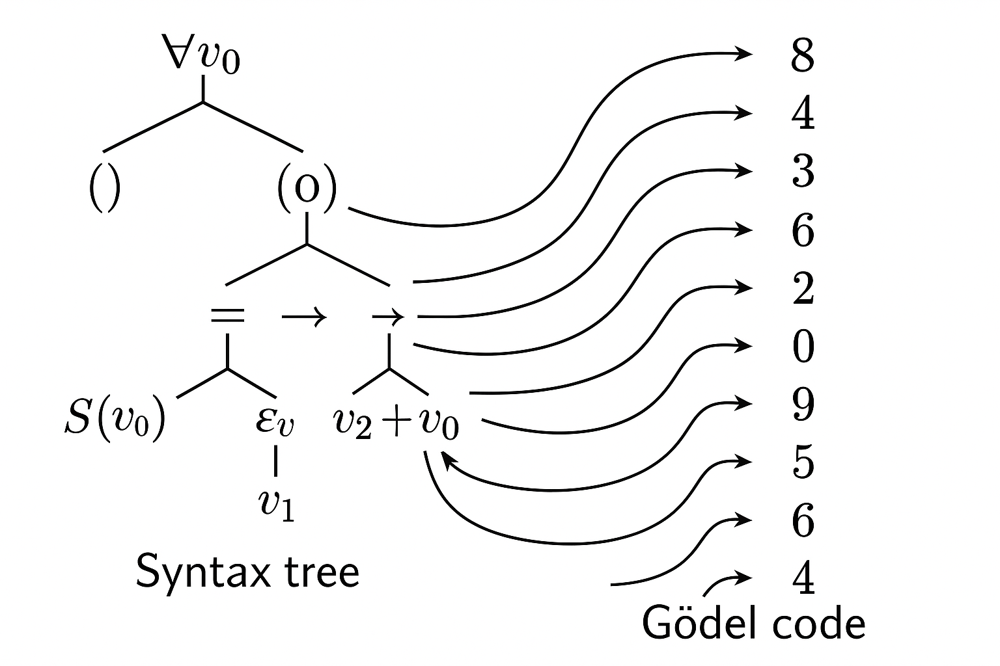
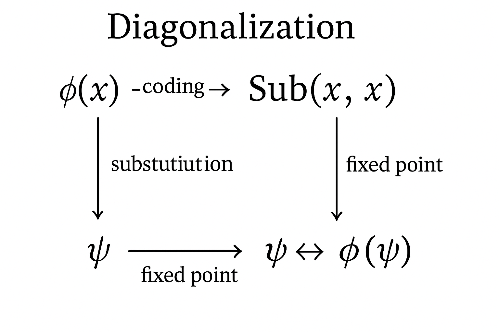
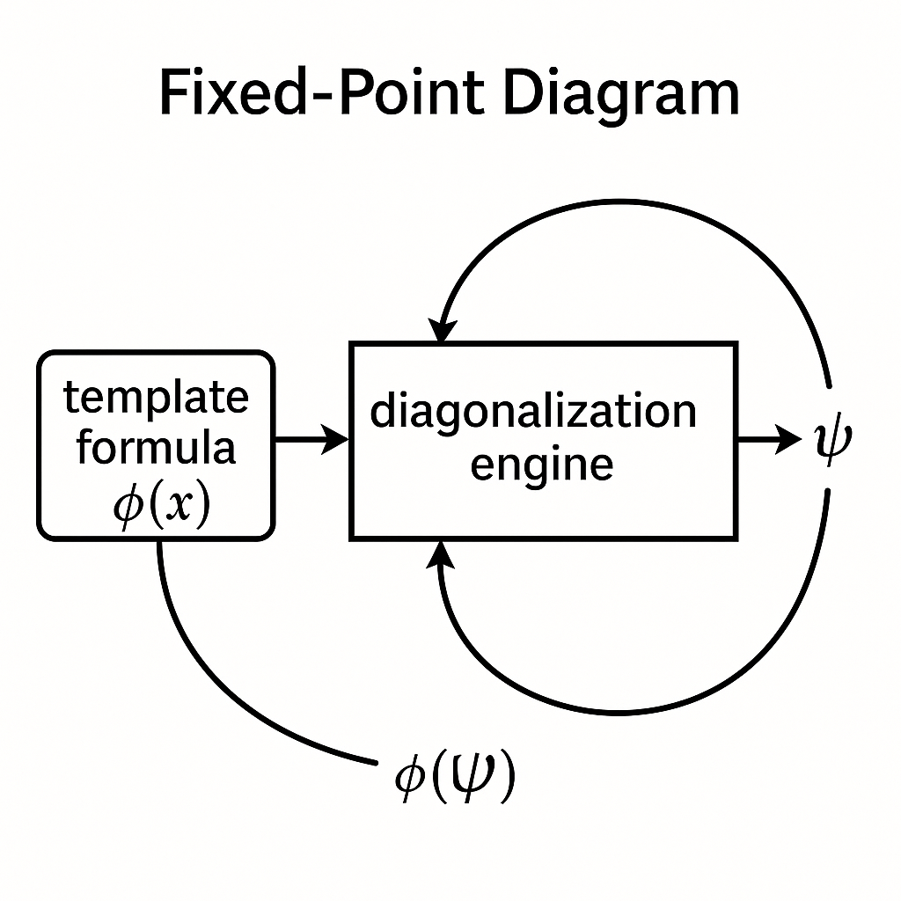
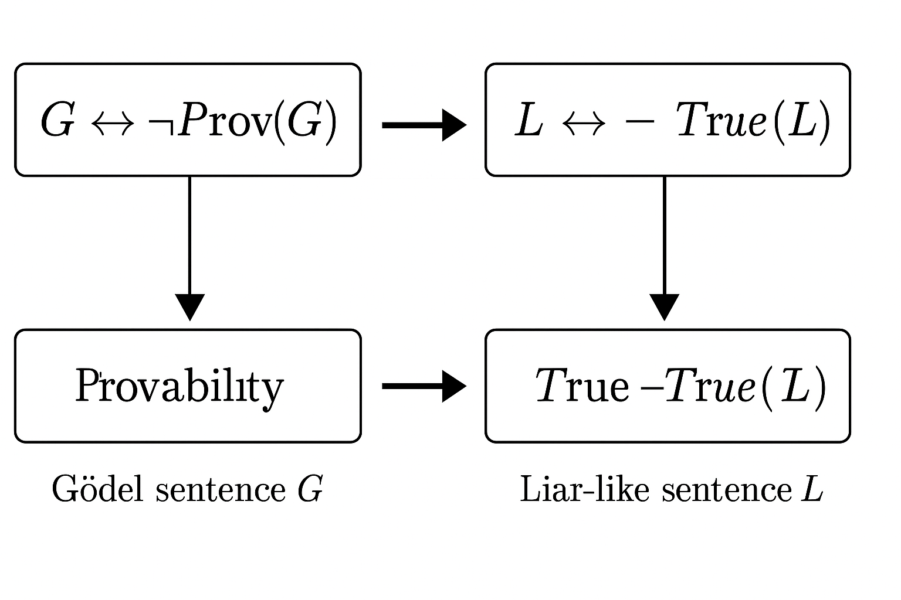
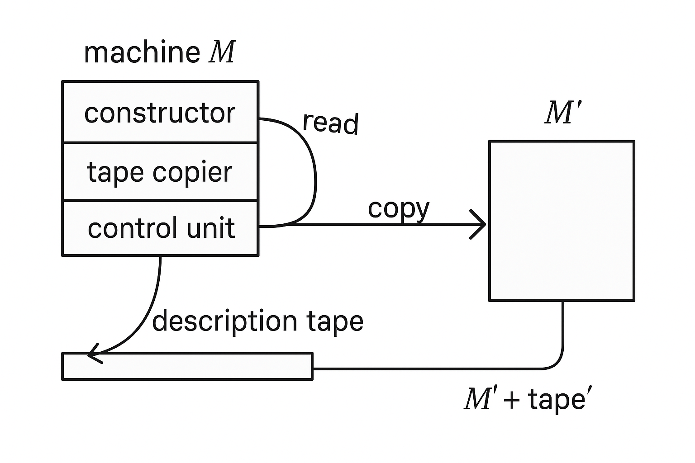
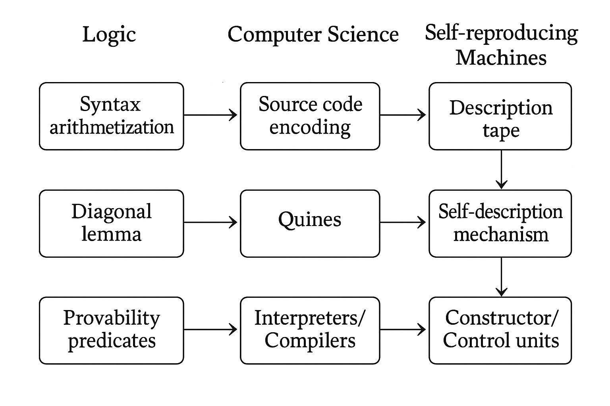

第 2 講：自指邏輯主題 2 —— 從語法到算術的自指編碼
本講延續第 1 講，聚焦一個核心問題：如何在算術中精確地表達「關於算術公式本身」的敘述？
這是哥德爾不完備定理與塔斯基不可判定／不可定義定理中，自指機制真正發力的技術核心。
我們將分幾個層次來說明：
- 如何用「編碼」將語句、推導等語法對象嵌入自然數結構 \(\mathbb{N}\)？
- 如何在一個弱到中等強度的算術理論中「內部重現」語法運算（長度、替換、證明等）？
- 如何精確地構造「此句不可被證明」與「此性質不可在語言內定義」等自指句？
- 這種技術在後續對 von Neumann 自複製機、計算模型與當代理論中的影響。

圖 2-5: an overview mind-map in English, showing nodes "Syntax", "Arithmetic Encoding", "Provability Predicate", "Self-reference", "Gödel", "Tarski", "von Neumann", connected by arrows; suitable as a high-level roadmap diagram
Prompt: an overview mind-map in English, showing nodes "Syntax", "Arithmetic Encoding", "Provability Predicate", "Self-reference", "Gödel", "Tarski", "von Neumann", connected by arrows; suitable as a high-level roadmap diagram
2.1 語法對象的算術化（arithmetization of syntax）
所謂「語法的算術化」，是從 Hilbert–Bernays、Gödel 起就扮演關鍵角色的技術。其基本構想：
將一個形式系統（如一階算術）的符號、字串、公式、證明等，透過某種可計算的編碼方式，對應到自然數；
再在算術理論中，以公式描述這些自然數所代表的「語法性質」。
形式上，給定一個語言 \(\mathcal{L}\)（例如含有符號 \(0, S, +, \times, =\) 的一階算術語言），我們要構造：
- 一個編碼函數 \(\ulcorner \cdot \urcorner : \text{Expr}_{\mathcal{L}} \to \mathbb{N}\)，將每個表達式（項、公式、證明等）編碼成自然數。
- 對於常見的語法關係（如「是某個公式的子公式」、「是良構公式」、「是證明序列」、「推導關係成立」），構造相應的算術公式 \(\mathrm{Formula}(x)\), \(\mathrm{Proof}(x, y)\) 等，來「內部捕捉」這些性質。
這使得我們可以在純粹的算術語言中談到「證明」、「可證性」、「真值」等等，從而產生自指。
2.1.1 符號與字串的基本編碼方法
為了簡化，考慮一個典型的一階算術語言 \(\mathcal{L}_A\)，包含：
- 常數符號：\(0\)
- 一元函數符號：\(S\)（後繼符號）
- 二元函數符號：\(+, \times\)
- 二元謂詞符號：\(=\)
- 邏輯符號：\(\lnot, \land, \lor, \rightarrow, \leftrightarrow, \forall, \exists\)
- 括號符號：\((, )\)，變元符號：\(v_0, v_1, v_2, \dots\)
作法概略如下：
- 先為這個有限（或至多可數）符號集 \(\Sigma\) 編一個符號編號 \(c : \Sigma \to \mathbb{N}_{\ge 1}\)，例如：
\[
c(0) = 1,\quad c(S) = 2,\quad c(+) = 3,\quad c(\times) = 4,\quad c(=) = 5,\quad c(\lnot) = 6,\dots
\]
並為每個變元 \(v_i\) 指定一個編號 \(c(v_i)\)，如 \(10 + i\) 等。
- 再用一個「字串編碼」把有限長度的符號序列編成自然數。經典作法是利用質數分解：
\[
\ulcorner s_0 s_1 \dots s_{n-1} \urcorner \;=\; 2^{c(s_0)} 3^{c(s_1)} 5^{c(s_2)} \cdots p_n^{c(s_{n-1})}
\]
其中 \(p_k\) 是第 \(k\) 個質數。

圖 2-3: diagram showing mapping from symbols {0, S, +, ×, =, ¬, ∀, (, ), v0, v1, ...} to natural numbers, then to exponents on prime numbers to form a single Gödel number; arrows labeled "coding"
Prompt: diagram showing mapping from symbols {0, S, +, ×, =, ¬, ∀, (, ), v0, v1, ...} to natural numbers, then to exponents on prime numbers to form a single Gödel number; arrows labeled "coding"
這樣，任一表達式（例如某個公式）就被寫成一串符號 \(s_0 s_1 \dots s_{n-1}\)，進而用上述規則編碼成一個自然數。這樣得到的 \(\ulcorner \cdot \urcorner\) 稱為「哥德爾編碼（Gödel numbering）」的一種實例。
嚴格來說：
- 必須保證 \(\ulcorner \cdot \urcorner\) 是單射（不同字串→不同自然數）
- 解碼與編碼都必須是可計算的，理想情況下在很弱的算術理論裡也可定義。
2.1.2 算術中定義「是某個符號序列的第 \(i\) 個符號」
關鍵步驟是，在算術理論（例如 Peano Arithmetic，簡寫為 \(PA\)）內，用算術公式表示「某自然數是某個哥德爾編碼對應字串的第 \(i\) 個符號」。
若用質數編碼，那就利用自然數基本性質來解析質因數與指數，這在算術中是可定義的。
具體而言，對任意自然數 \(n\)（代表某一串符號的編碼）與位置 \(i\)，想定義一個算術公式
\[
\mathrm{Symb}(n, i, s)
\]
意為「在字串編碼為 \(n\) 的表達式中，第 \(i\) 個符號的編碼值為 \(s\)」。
用質數分解觀點：
- 令 \(p_k\) 為第 \(k\) 個質數。
- 若字串長度為 \(L\)，則
\[
n = \prod_{k = 0}^{L-1} p_{k+1}^{c(s_k)}.
\]
- 我們需要一些理論內的輔助概念：
- \(\mathrm{Prime}(x)\):「\(x\) 是質數」
- \(\mathrm{Prime}_k(x)\):「\(x\) 是第 \(k\) 個質數」
- \(\mathrm{Exp}(n, p, e)\):「\(p^e\) 整除 \(n\) 但 \(p^{e+1}\) 不整除 \(n\)」，也就是 \(e\) 是 \(p\) 在 \(n\) 的質因數分解中的指數。
這些關係在 \(PA\) 乃至更弱的算術理論（如 \(I\Delta_0 + \mathrm{Exp}\)）中都可以以 \(\Sigma_1\)-公式定義出來。
例如：
\[
\mathrm{Exp}(n, p, e) \;\equiv\; p^e \mid n \;\land\; \lnot (p^{e+1} \mid n)
\]
其中「\(\mid\)」的可定義性也是基礎算術中的標準命題。
因此，可以定義：
\[
\mathrm{Symb}(n, i, s) \;\equiv\; \exists p \Big( \mathrm{Prime}_{i+1}(p) \land \mathrm{Exp}(n, p, s) \Big).
\]
直覺上：讀取編碼數 \(n\) 在第 \(i\) 個質數上的指數值，就是第 \(i\) 個符號的編號 \(s\)。
如此，就在算術語言中實現了對「字串中第 \(i\) 個符號是什麼」的引用。
2.1.3 良構公式與證明序列的可定義性
有了對符號序列的分析，我們就能在算術中定義高度非平凡的語法概念，例如：
- \(\mathrm{Term}(n)\): 「\(n\) 是某個 項（term） 的哥德爾編碼」
- \(\mathrm{Formula}(n)\): 「\(n\) 是某個 公式（formula） 的哥德爾編碼」
- \(\mathrm{Proof}(p, \varphi)\): 「\(p\) 是一個形式系統 \(\mathcal{T}\) 中證明公式 \(\varphi\) 的證明序列」
這些公式都可以構造為 \(\Sigma_1\)-公式（或適度複雜的公式），只需稍加形式化即可。
以 \(\mathrm{Formula}(n)\) 為例，其定義會檢查：
- 是否為原子公式（如 \(t_1 = t_2\)），對應到符號序列之結構；或
- 是否為某個公式的否定 \(\lnot \psi\)；或
- 是否為兩公式的連接 \((\psi_1 \land \psi_2)\)、\((\psi_1 \rightarrow \psi_2)\)，等等；或
- 是否為量化 \(\forall v_i \,\psi\)、\(\exists v_i\,\psi\)。
在算術中，我們會用類似「遞迴定義」的方式，將這些結構條件拆成對應的算術條件，例如「存在 \(m\) 與 \(k\)，使得 \(n\) 對應到串接 \((\forall v_i)\) 與編號 \(m\) 的公式」。
具體例子（只示意結構）：
\[
\begin{aligned}
\mathrm{Formula}(n)\;\equiv\;&\;
\mathrm{AtomicFormula}(n) \\
&\lor \exists m\,\big( \mathrm{Formula}(m) \land \mathrm{NegationCode}(m, n) \big) \\
&\lor \exists m_1, m_2\,\big( \mathrm{Formula}(m_1) \land \mathrm{Formula}(m_2) \land \mathrm{ConjCode}(m_1, m_2, n) \big) \\
&\lor \cdots
\end{aligned}
\]
其中 \(\mathrm{NegationCode}\), \(\mathrm{ConjCode}\) 等是描述「符號串的拼接」的算術公式。
關鍵在於，這些操作本質上都是原始遞迴可定義的，因而在 \(PA\) 中都能適當表達。

圖 2-7: a syntax tree of a formula like ∀v0 (S(v0) = v1 → ∃v2 (v2 + v0 = v1)), next to a list of numbers representing its Gödel code, with arrows showing how sub-formulas map to segments of the code
Prompt: a syntax tree of a formula like ∀v0 (S(v0) = v1 → ∃v2 (v2 + v0 = v1)), next to a list of numbers representing its Gödel code, with arrows showing how sub-formulas map to segments of the code
同樣，我們可以定義「證明序列」的公式 \(\mathrm{Proof}(p, \varphi)\)。
若形式系統 \(\mathcal{T}\) 的推理規則是遞迴可算的一組規則，那麼「\(p\) 是一個合法的證明序列」是一個可遞歸可枚舉的性質；
因此可以由一個 \(\Sigma_1\)-公式 \(\mathrm{Prf}_\mathcal{T}(p, \varphi)\) 表示出來。
概念上：
\(p\) 是證明 \(\varphi\) 的證明序列
\(\iff\) \(p\) 編碼了一列公式 \(\langle \psi_0, \psi_1, \dots, \psi_{k} \rangle\)，
其中：每一步要麼是公理，要麼是由前面步驟依某推理規則導出，且最後一步 \(\psi_k\) 是 \(\varphi\)。
這種形式化在哥德爾不完備定理與塔斯基不可定義定理中扮演關鍵角色。接下來要說明的是：
一旦語法被算術化，我們就能在算術語言裡「談算術語言本身」——最終導向自指與不完備性。
2.2 可證性述詞與「內部可證性」
假設 \(\mathcal{T}\) 是一個遞歸可表達的算術理論（例如 \(PA\)、\(Q\)、\(ZFC\) 的算術部分等）。
我們可以藉由上述 \(\mathrm{Proof}\) 公式定義一個在算術內部的可證性述詞：
\[
\mathrm{Prov}_\mathcal{T}(y) \;\equiv\; \exists p\, \mathrm{Prf}_\mathcal{T}(p, y)
\]
其語義直觀解釋為：「存在一個數 \(p\)，它是理論 \(\mathcal{T}\) 中對應於公式編碼 \(y\) 的證明」。
在字面上，這是一個關於自然數的謂詞，卻在意義上描述了「可證性」這種語法性質。
2.2.1 Hilbert–Bernays–Löb 條件（HB 条件）
為了讓可證性述詞在形式上有良好行為，通常要求 \(\mathrm{Prov}_\mathcal{T}\) 滿足如下三條「可證性公理條件」（Hilbert–Bernays–Löb derivability conditions）：
- 封閉於證明： 若 \(\mathcal{T} \vdash \varphi\)，則
\[
\mathcal{T} \vdash \mathrm{Prov}_\mathcal{T}(\ulcorner \varphi \urcorner).
\]
- 可證性對蕴涵的內部化：
\[
\mathcal{T} \vdash \mathrm{Prov}_\mathcal{T}(\ulcorner \varphi \rightarrow \psi \urcorner) \rightarrow \big( \mathrm{Prov}_\mathcal{T}(\ulcorner \varphi \urcorner) \rightarrow \mathrm{Prov}_\mathcal{T}(\ulcorner \psi \urcorner) \big).
\]
- 可證性自身的內部反射：
\[
\mathcal{T} \vdash \mathrm{Prov}_\mathcal{T}(\ulcorner \varphi \urcorner) \rightarrow \mathrm{Prov}_\mathcal{T}(\ulcorner \mathrm{Prov}_\mathcal{T}(\ulcorner \varphi \urcorner) \urcorner).
\]
這些條件的合理性，在語義上近似：
- 若某句真的在 \(\mathcal{T}\) 可證，那 \(\mathcal{T}\) 理應能證明「有個編碼是它的證明」。
- 若 \(\mathcal{T}\) 可證 \(\varphi \rightarrow \psi\)，且可證 \(\varphi\)，那應可證 \(\psi\)。
形式化後就是第二條中對 \(\mathrm{Prov}_\mathcal{T}\) 的性質。
- 第三條表達：若 \(\varphi\) 可證，那「\(\varphi\) 可證」本身也應該是可證的。
上述條件在適度強的算術理論中都可被證明對相應的 \(\mathrm{Prov}_\mathcal{T}\) 成立。
這使得我們可以把 \(\mathrm{Prov}_\mathcal{T}\) 當作一個「正式可證性的標準模型」來操作。
2.2.2 「內部化」的直覺與例子
所謂「內部化」（internalization），是指：
本來關於語法層面的關係（例如「從 \(\varphi\) 可以推導出 \(\psi\)」）可以在元理論中描述；
但現在透過算術化，我們可以用 \(\mathcal{T}\) 內部的公式來表達這種關係，進而在 \(\mathcal{T}\) 內進行推理。
簡單例子：假设 \(\mathcal{T}\) 為 \(PA\)，你在元語言上知道：
根據條件 1，我們有：
\[
PA \vdash \mathrm{Prov}_{PA}(\ulcorner 0 = 0 \urcorner)
\]
這不是一句平常的算術命題（像 \(0 = 0\) 那樣），而是一句「存在某數 \(p\) 是 \(0=0\) 的證明」。
然而在算術結構 \(\mathbb{N}\) 中，它只是一句關於自然數的陳述：
「存在 \(p\) 滿足某 \(\Sigma_1\) 性質」。
此種「語法性質被算術內部化」的能力，是哥德爾第二不完備定理（特別是對於「\(\mathcal{T}\) 的一致性」）與 Löb 定理的技術基礎。
也將是塔斯基不可定義定理中「真值述詞無法在同語言內定義」證明中的關鍵一腳。
2.3 自指構造的一般形態：對角化引理（Diagonal Lemma）
要嚴格構造「本句不可被 \(\mathcal{T}\) 證明」、「本句不可被 \(\mathcal{T}\) 反駁」、「本句不為真」等形式句，我們需要一個一般性的自指技術：對角化引理（Diagonal Lemma）。
2.3.1 對角化引理的形式敘述
令 \(\mathcal{L}\) 是包含基本算術的語言，而 \(\mathcal{T}\) 是其上一個足夠強的遞歸可表達理論（例如含有基本算術的理論）。
對任意一個 \(\mathcal{L}\)-公式 \(\varphi(x)\)（有且僅有一個自由變元 \(x\)），存在一個無自由變元公式 \(\psi\) 使得：
\[
\mathcal{T} \vdash \psi \leftrightarrow \varphi(\ulcorner \psi \urcorner).
\]
這說明：對任意你指定的「性質」 \(\varphi(x)\)，總可以構造一個句子 \(\psi\) 來斷言「\(\psi\) 擁有性質 \(\varphi\)」 —— 也就是一種普遍的自指機制。
- 若令 \(\varphi(x) := \lnot \mathrm{Prov}_\mathcal{T}(x)\)，則存在 \(\psi\) 使得
\[
\mathcal{T} \vdash \psi \leftrightarrow \lnot \mathrm{Prov}_\mathcal{T}(\ulcorner \psi \urcorner),
\]
這就是「此句不可被 \(\mathcal{T}\) 證明」的哥德爾句。
- 若令 \(\varphi(x) := \lnot \mathrm{True}(x)\)（設想有某種「真值述詞」），則會導致塔斯基型的矛盾。

圖 2-4: a diagram showing diagonalization: starting from a formula φ(x), building a function Sub(x,x) that substitutes the numeral of x into itself, then obtaining a fixed point ψ such that ψ ↔ φ(⌜ψ⌝); label arrows with "coding", "substitution", "fixed point"
Prompt: a diagram showing diagonalization: starting from a formula φ(x), building a function Sub(x,x) that substitutes the numeral of x into itself, then obtaining a fixed point ψ such that ψ ↔ φ(⌜ψ⌝); label arrows with "coding", "substitution", "fixed point"
2.3.2 對角化引理的構造性證明
核心想法是將「代入自身編號」這個操作算術化。
稍嚴謹地，先形式化「把公式的自由變元 \(x\) 代入某個具體數字的數字詞（numeral）」的運算。
(1) 代入函數的算術化
令 \(\mathrm{Sub}(n, m)\) 為「把編碼為 \(n\) 的公式 \(\varphi(x)\) 中，將自由變元 \(x\) 用數字詞 \(\overline{m}\) 代替後，所得公式的編碼」。
在元層面 \(\mathrm{Sub}: \mathbb{N} \times \mathbb{N} \to \mathbb{N}\) 可以定義為一個遞歸函數（精確地根據字串處理與變元管理），
因此在 \(PA\) 中存在對應的 \(\Sigma_1\)-定義：
\[
\mathrm{Sub}(n, m, k)
\]
意義為「\(k\) 是將公式編碼 \(n\) 中的自由變元 \(x\) 替換為 \(\overline{m}\) 所得公式的編碼」。
進一步，對每個 \(n\)，可以在 \(PA\) 中證明存在唯一的 \(k\) 使得 \(\exists m\ \mathrm{Sub}(n, m, k)\) 給出正確替換結果。
為簡潔起見，我們在元語言中寫作 \(k = \mathrm{Sub}(n, m)\)。
(2) 固定點構造：定義「對角函數」
定義一個元層函數 \(d: \mathbb{N} \to \mathbb{N}\)：
\[
d(n) := \mathrm{Sub}(n, n).
\]
也就是把某個公式的編碼 \(n\) 代回自身 —— 「把自己的編號代入自己的自由變元」。
在 \(PA\) 中，對應到一個算術可定義函數 \(\mathrm{Diag}(n, k)\)：
\[
\mathrm{Diag}(n, k) \;\equiv\; \mathrm{Sub}(n, n, k).
\]
現在，給定任意一個公式 \(\varphi(x)\)，令 \(e = \ulcorner \varphi(x) \urcorner\) 為它的哥德爾編碼。
考慮以下的公式：
\[
\theta(y) \;\equiv\; \varphi\big( \mathrm{Diag}(y) \big)
\]
（在形式上，需要把「\(\mathrm{Diag}(y)\)」本身用算術公式描述出來；這是可行的，因 \(\mathrm{Diag}\) 是遞歸可定義函數。）
然後，將 \(y\) 代入 \(\overline{e}\)（\(\varphi\) 的編碼數之數字詞），得到公式：
\[
\psi \;\equiv\; \theta(\overline{e}).
\]
注意 \(\psi\) 是無自由變元的句子，且（在 \(\mathcal{T}\) 內）可證明：
\[
\psi \;\leftrightarrow\; \varphi\big( \mathrm{Diag}(\overline{e}) \big).
\]
但 \(\mathrm{Diag}(\overline{e})\) 在語義上就是 \(\ulcorner \psi \urcorner\)，於是：
\[
\mathcal{T} \vdash \psi \leftrightarrow \varphi(\ulcorner \psi \urcorner).
\]
這就是對角化引理所承諾的自指句子 \(\psi\)，證明完成。
2.3.3 直覺視角：語言中的「模板函數」
可將上述過程比喻為：
你有一個「模板句」 \(\varphi(x)\)，形如「編號為 \(x\) 的句子有性質 \(P\)」。
然後定義一個操作 \(d(\cdot)\)：
- 輸入一個句子編號 \(n\)；
- 輸出的是那個句子在自述自己的編號時得到的新句子。
接著，你把模板本身的編號 \(e\) 丟進這個操作，就得到一個特別句子 \(\psi\)：
\(\psi\) 正好聲稱「以 \(\psi\) 的編號為參數時，模板中的敘述成立」。
因此，\(\psi\) 等同於「我（\(\psi\)）有性質 \(\varphi\)」。

圖 2-1: a fixed-point diagram: box labeled "template formula φ(x)", arrow into a "diagonalization engine" that uses its own code to feed into x, outputting a formula ψ that loops back to refer to φ(⌜ψ⌝); visually show a loop/self-reference
Prompt: a fixed-point diagram: box labeled "template formula φ(x)", arrow into a "diagonalization engine" that uses its own code to feed into x, outputting a formula ψ that loops back to refer to φ(⌜ψ⌝); visually show a loop/self-reference
2.4 從自指到哥德爾不完備性與塔斯基不可定義性
現在可以用對角化引理和可證性述詞，構造出典型的自指句形。
這些構造會在後續專門講哥德爾與塔斯基定理時被重複運用；在此先在自指邏輯的框架下做技術預備。
2.4.1 哥德爾句：\(\mathcal{T}\) 的「不可證句」
給定一個一致且遞歸可表達的理論 \(\mathcal{T}\)（含足夠算術），定義
\[
\varphi(x) := \lnot \mathrm{Prov}_\mathcal{T}(x).
\]
根據對角化引理，存在一個句子 \(G_\mathcal{T}\) 使得
\[
\mathcal{T} \vdash G_\mathcal{T} \leftrightarrow \lnot \mathrm{Prov}_\mathcal{T}(\ulcorner G_\mathcal{T} \urcorner).
\]
若我們在語義上把 \(\mathrm{Prov}_\mathcal{T}\) 解釋為「\(\mathcal{T}\) 有證明」，則 \(G_\mathcal{T}\) 表達的是：「此句在 \(\mathcal{T}\) 中不可證」。
依哥德爾的經典論證：
- 若 \(\mathcal{T} \vdash G_\mathcal{T}\)，則 \(\mathcal{T} \vdash \mathrm{Prov}_\mathcal{T}(\ulcorner G_\mathcal{T} \urcorner)\)，
但又有 \(\mathcal{T} \vdash G_\mathcal{T} \leftrightarrow \lnot \mathrm{Prov}_\mathcal{T}(\ulcorner G_\mathcal{T} \urcorner)\)，導致矛盾；因此 \(\mathcal{T}\) 不能證明 \(G_\mathcal{T}\)。
- 若 \(\mathcal{T}\) 一致，則不能證明 \(\lnot G_\mathcal{T}\)（此處使用一些可證性述詞的性質與基礎算術事實）。
於是 \(G_\mathcal{T}\) 在 \(\mathbb{N}\) 為真但在 \(\mathcal{T}\) 中不可證。
這給出第一不完備定理：任何這樣的 \(\mathcal{T}\) 都是不完備的。
2.4.2 塔斯基不可定義定理：真值述詞的自毀構造
考慮試圖在算術語言內定義一個「真值述詞」 \(\mathrm{True}(x)\)，使得：
\[
\mathbb{N} \models \varphi \quad \text{當且僅當} \quad \mathbb{N} \models \mathrm{True}(\ulcorner \varphi \urcorner),
\]
對於所有算術句 \(\varphi\) 均成立。塔斯基不可定義定理斷言：這種真值述詞在同一語言中無法定義。
核心想法與哥德爾句類似：利用對角化引理，以
\[
\varphi(x) := \lnot \mathrm{True}(x),
\]
構造出一個句子 \(L\) 滿足
\[
\mathcal{T} \vdash L \leftrightarrow \lnot \mathrm{True}(\ulcorner L \urcorner).
\]
從語義上看，若 \(\mathrm{True}(\cdot)\) 確實刻畫真值，那 \(L\) 就是在說「這個句子是假的」，即語義版的說謊者悖論（Liar paradox），導致不可一致。
因此，只要算術是足夠強的一致理論，它就不能在自己的語言內定義這樣一個「全局真值述詞」。
這就是塔斯基不可定義真理定理。

圖 2-6: two parallel constructions: on left, Gödel sentence G: G ↔ ¬Prov(⌜G⌝); on right, Liar-like sentence L: L ↔ ¬True(⌜L⌝); arrows highlight the analogy between provability predicate and truth predicate
Prompt: two parallel constructions: on left, Gödel sentence G: G ↔ ¬Prov(⌜G⌝); on right, Liar-like sentence L: L ↔ ¬True(⌜L⌝); arrows highlight the analogy between provability predicate and truth predicate
2.5 自指邏輯與機器自複製：連結到 von Neumann 構想
到目前為止，我們在邏輯與算術的層次上建立了自指結構。
von Neumann 在自複製機器的理論中（如在細胞自動機、通用建造機構等）也用到了類似的想法：
機器不只是複製其物理結構，也要複製描述自身結構的「說明書」——這也是一種自指。
2.5.1 von Neumann 自複製機的抽象結構
在 von Neumann 的構想中，自複製機包含幾個核心部分：
- 描述帶（description tape）：一串符號，描述如何構造某個機器（包括描述帶本身）。
- 建造器（constructor）：讀取描述帶，根據指示構造對應的機器結構。
- 拷貝器（copying mechanism）：能夠複製描述帶本身。
- 控制單元（control unit）：組織上述流程，使得最終輸出的是「原機器 + 新描述帶」的組合副本。

圖 2-2: schematic of von Neumann self-reproducing automaton: a block labeled "machine M", containing sub-blocks "constructor", "tape copier", "control unit" and an attached "description tape"; arrows show reading the tape to build a new machine plus copying the tape to attach to it, producing M′ + tape′ identical to the original
Prompt: schematic of von Neumann self-reproducing automaton: a block labeled "machine M", containing sub-blocks "constructor", "tape copier", "control unit" and an attached "description tape"; arrows show reading the tape to build a new machine plus copying the tape to attach to it, producing M′ + tape′ identical to the original
這在結構上與我們在算術中的自指極為類似：
- 描述帶 \(\leftrightarrow\) 公式的編碼 \(\ulcorner \cdot \urcorner\)
- 建造器 \(\leftrightarrow\) \(\mathrm{Sub}\)、\(\mathrm{Proof}\) 等「語法操作」的算術化
- 整個機器 \(\leftrightarrow\) 一個在語言中談論自身的證明系統（含可證性述詞）
von Neumann 強調：要有自複製，不只是複製結構，還必須複製能描述結構的資訊；而資訊本身作為一串符號，亦被系統內部處理與操作。
這一點在邏輯中就是：自指句不只是談到「有一個證明」，其指向的對象本身也是由同一套語法（\(\mathcal{L}\)）構造出的公式。
2.5.2 從算術自指到通用構造系統
在自指邏輯的視角下，可以將 von Neumann 機理解為一種「在物理系統中實現了對自身結構與指令的算術化」。
若我們把「描述帶」的字串編碼視為自然數，那麼建造器功能可被看成類似 \(\mathrm{Sub}\)、\(\mathrm{Diag}\) 的作用：
利用自身的結構（以及其描述）作為輸入，重建或改寫出新結構。
這對隨後的發展有多重啟發：
- 程式自複製（quine）與自解釋器（self-interpreter）：
在計算機科學中，構造一個程式，使它輸出自己的原始碼，是對角化引理的軟體實現版。
- 編譯器自舉（bootstrapping）：
編譯器可以編譯自己的原始碼，透過多次「編譯自己」產生優化版本，亦是一種資訊層的自指。
- 理論物理中的自描述系統：
例如在量子資訊與自複製量子狀態的研究中，「禁止精確複製任意量子態（no-cloning theorem）」是限制條件；
但在結構／程式層面仍可構造自檢測、自描述機制。

圖 2-8: three columns labeled "Logic", "Computer Science", "Self-reproducing Machines"; rows mapping concepts: syntax arithmetization ↔ source code encoding ↔ description tape, diagonal lemma ↔ quines ↔ self-description mechanism, provability predicates ↔ interpreters/compilers ↔ constructor/control units
Prompt: three columns labeled "Logic", "Computer Science", "Self-reproducing Machines"; rows mapping concepts: syntax arithmetization ↔ source code encoding ↔ description tape, diagonal lemma ↔ quines ↔ self-description mechanism, provability predicates ↔ interpreters/compilers ↔ constructor/control units
2.6 當前發展與研究方向的鏈結
自指邏輯的算術化技術，並非只用於經典的不完備性與不可定義性結果；在當代研究中，它延伸到多個方向：
2.6.1 形式可證性邏輯（provability logic）
以 modal logic GL（Gödel–Löb logic）為代表，以一個 modal 運算子 \(\Box\) 表示「可證性」：
\[
\Box \varphi \quad \text{讀作「\(\varphi\) 在某理論裡是可證的」}.
\]
透過 Hilbert–Bernays–Löb 條件，可証 \(\Box\) 滿足類似：
- \(\Box(\varphi \rightarrow \psi) \rightarrow (\Box \varphi \rightarrow \Box \psi)\)
- \(\Box(\Box \varphi \rightarrow \varphi) \rightarrow \Box \varphi\)（Löb 公理）
這是一種對「自指與可證性」的高度抽象化，與我們本講的算術自指具有一一對應的關係。
2.6.2 自指在型理論與程式語言中的體現
- 反射型理論（reflective type theory）：
在型理論中，允許某些形式的自反射（reflection），例如一個理論可以「看見」自己的證明對象或式子，藉此支持 tactic、程式抽象等。
- 程式語言的 meta-programming：
利用 quotation／unquotation 操作的語言，允許在程式中生成與操控自身程式碼（AST），實際上就是把語法嵌入一個資料結構，與算術化極為類似。
2.6.3 自指邏輯與 AI / 自修正系統
在當代 AI 安全／形式驗證領域，自指邏輯被用來分析「能推理自身正確性與未來行為的代理」。
例如：
- 使用可證性邏輯刻畫「代理相信什麼」、「相信自己可以證明什麼」。
- 利用類似哥德爾構造的方法，分析自修正程式在何種條件下會導致不穩定或自毀邏輯。
這些議題皆強烈依賴本講所述算術化與對角化技術，在形式上建立自指的「內部觀點」。
2.7 小結與下一講預告
本講的重點可總結如下：
- 語法算術化： 透過哥德爾編碼與可定義的語法操作（\(\mathrm{Symb}, \mathrm{Formula}, \mathrm{Proof}\) 等），
在算術內部對「語言自身」進行描述。
- 可證性述詞： \(\mathrm{Prov}_\mathcal{T}(y) := \exists p\,\mathrm{Prf}_\mathcal{T}(p, y)\) 使得「可證性」作為算術性質被內部化，並滿足 Hilbert–Bernays–Löb 的導出條件。
- 對角化引理： 對任意性質 \(\varphi(x)\) 存在 \(\psi\) 使得
\(\mathcal{T} \vdash \psi \leftrightarrow \varphi(\ulcorner \psi \urcorner)\)，技術上依賴代入函數與對角函數的算術化。
- 自指句的模板： 以 \(\varphi(x) = \lnot \mathrm{Prov}_\mathcal{T}(x)\) 或 \(\varphi(x) = \lnot \mathrm{True}(x)\) 等給出哥德爾句與塔斯基說謊句，導向不完備與不可定義性。
- 與 von Neumann 自複製機的類比： 描述帶、建造器與拷貝器的結構，
對應邏輯中「語法作為數據」與「對自身描述的操作」。
在第 3 講中，我們將專注於：
- 完整、嚴謹地推導哥德爾第一與第二不完備定理。
- 解剖塔斯基不可定義真值定理，並與本講的自指技術緊密對應。
- 分析這些結果對數學基礎、計算理論與物理自指模型的深層含義。